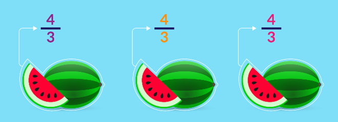
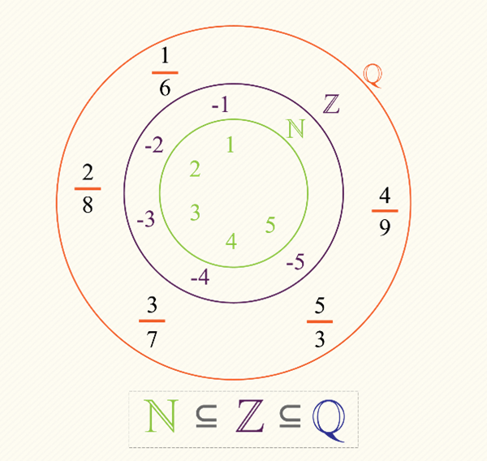
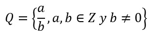

TEXTO PRETEXTO
¿Qué son los números racionales o fraccionarios?
(Miguel Enrrique Bocanegra M. O., págs. 17-18)
No todas las cantidades se pueden representar a través de números naturales o enteros, aprende qué son los números racionales aquí.
Observa la siguiente situación: tres amigos cavernícolas salen en búsqueda de frutas para recolectar. Pasan todo el día buscando y solo encuentran cuatro sandías. Si reparten todo lo que encontraron en porciones iguales ¿Cuánto corresponde a cada uno de ellos?
Les debe pertenecer más de una sandía pues ellos son tres y lograron recolectar más que ese número. Les correspondería dos si hubieran encontrado seis, pero no encontraron sino cuatro. Así, el número que representa la cantidad de sandía que les corresponde se encuentra entre 1 y 2.
¿Conoces algún natural o entero que represente cuánto corresponde a cada uno? Fíjate que queremos representar el resultado de dividir una cantidad entera en cierto número de partes iguales, en este caso dividir cuatro entre tres. Necesitamos los símbolos adecuados para simbolizar tales divisiones:
Supongamos que a y b son dos números enteros, es decir: a, b ϵ Z Cuando queramos distribuir la cantidad a, en b partes iguales, escribiremos a/b para representar cada una de esas partes.
Llamaremos numerador al número de arriba y denominador al de abajo.
Volviendo al ejemplo de nuestros amigos cavernícolas, como se quieren dividir cuatro sandias en tres partes iguales, representamos cada parte con la expresión 4/3 que podemos leer simplemente como "cuatro sobre tres" o "cuatro tercios". En este caso, 4 es el numerador y 3 es el denominador.
Una forma de solucionar el problema de los tres amigos es dar a cada uno una sandía y dividir la restante en tres, dando a cada uno la fracción que le corresponde.Tenemos ahora los símbolos necesarios para representar no solo unidades enteras, sino que además podremos representar fracciones o partes de unidad.
Llamaremos conjunto de números racionales o conjunto de números fraccionarios, al conjunto de todas las posibles expresiones del tipo a/b donde a y b son números enteros y b es diferente de cero. Representaremos este conjunto por medio del símbolo Q.
Por ejemplo, los números 5 y 9 hacen parte del conjunto de los números enteros, por lo tanto la expresión 5/9 pertenece al conjunto de los fraccionarios, es decir: 5/9 ϵ Q.
Los números enteros negativos también son tenidos en cuenta a la hora de representar fracciones, las expresiones -a/b, a/-b,-a/-b, también pertenecen a Q.

Podemos describir el conjunto de los números racionales o fraccionarios por comprensión así:

La anterior expresión debe ser leída así: “Q es el conjunto de las expresiones tales que a y b son números enteros y b es diferente a cero”.
VEAMOS EL SIGUIENTE VIDEO